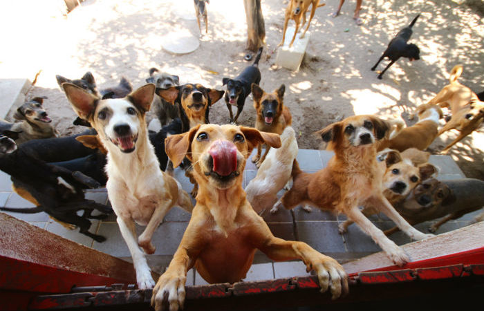
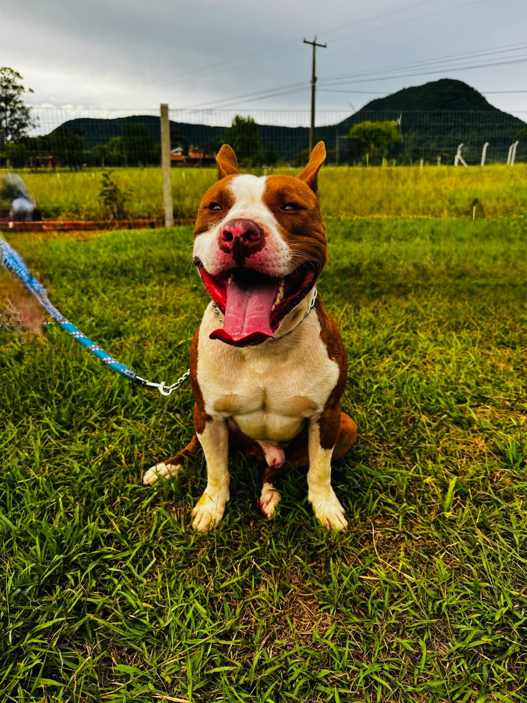
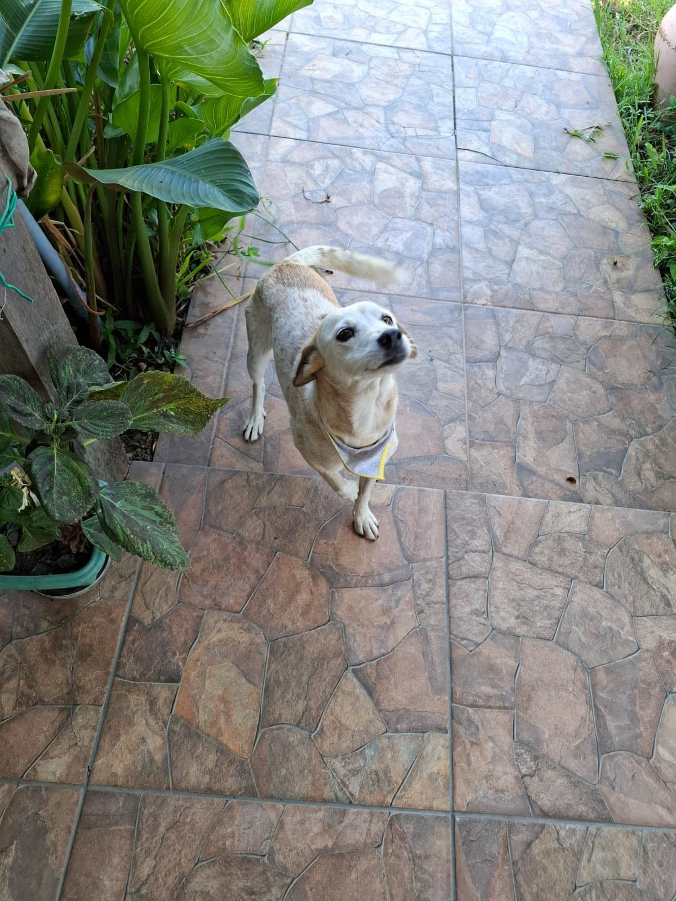
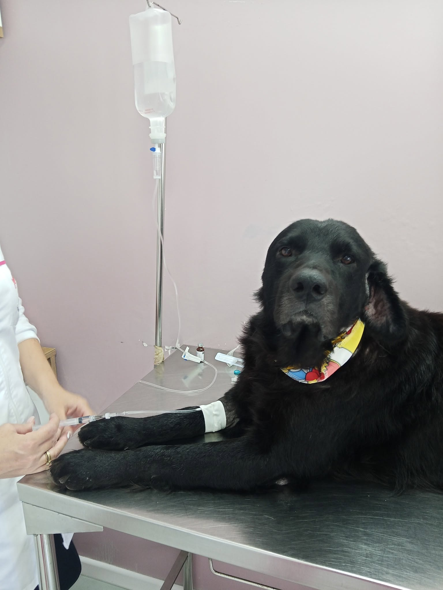
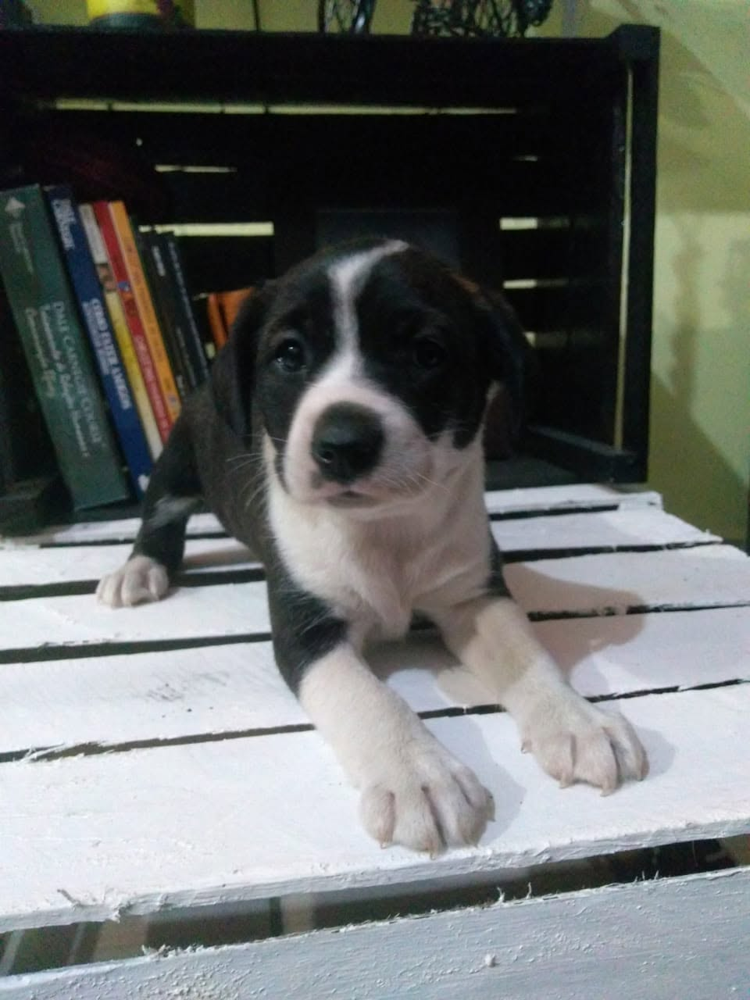

Au au, que bom que você clicou aqui! Senta aí (e dá a patinha!) que eu vou te contar a história de como nós, os doguinhos e gatinhos do mundo, decidimos dominar a internet por uma causa nobre. Nós criamos o Vira-Lata Sortudo porque cansa demais ter que fazer aquela cara de coitado na rua para conseguir um pedaço de pão, sabe? A verdade é que as ONGs e os protetores independentes são os nossos heróis de duas patas eles nos resgatam, limpam nossos machucados e dão um teto para a gente dormir, substituindo e ajudando abrigos lotados. Mas ó, o nosso plano vai muito além de achar um sofá quentinho para eu tirar meus cochilos. O nosso site tem uma missão social gigantesca: a gente quer educar os humanos! Cuidar de nós também é cuidar da saúde e do coração da sociedade inteira.
Encontre um amigo de quatro patas pronto para receber amor!

Fêmea • Porte Pequeno • 2 anos

Macho • Porte Médio • 1 ano

Macho • Porte Grande • 8 anos

Macho • Porte Pequeno • 4 meses
Seja você um veterinário, uma ONG ou um apoiador, sua doação ajuda a manter nossos mutirões e resgates ativos!